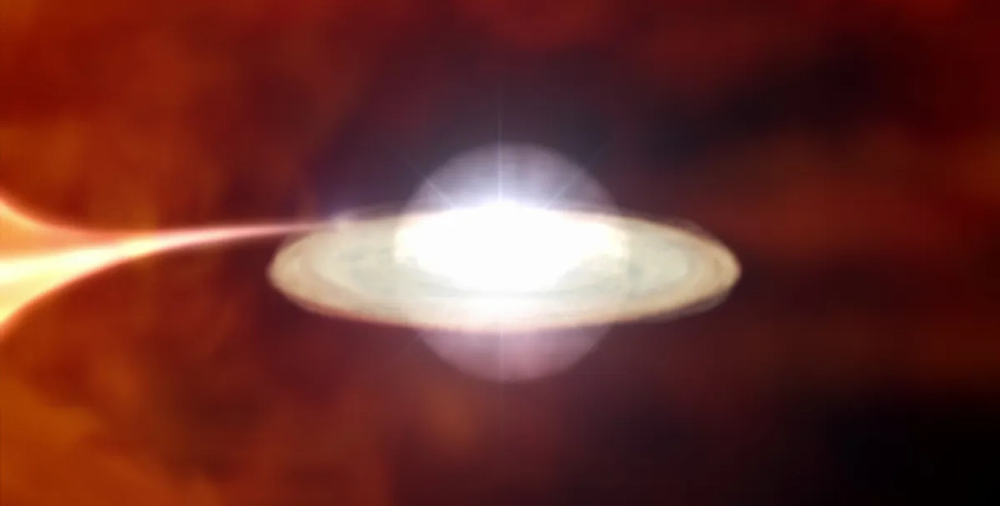

Раз на 80 років: 27 березня можна буде спостерігати рідкісне зоряне явище
Астрономи очікують на вражаюче небесне явище, коли T Coronae Borealis, яку часто називають Полум'яною зорею, спалахне у черговий раз 27 березня може відбутися спалах T Coronae Borealis, відомої як Полум’яна зоря. Це рідкісне явище, яке відбувається раз у 80 років, можна буде спостерігати неозброєним оком.
Астрономи очікують на дивовижне небесне явище, коли T Coronae Borealis, яку часто називають Полум'яною зорею, спалахне у черговий раз. Ця подвійна система зірок, що складається з червоного гіганта і білого карлика, переживає періодичні спалахи приблизно кожні 80 років, пише IFLScience.
Виходячи з історичних закономірностей, експерти припускають, що наступний спалах може відбутися вже 27 березня 2025 року, а ще в 2026 році і пізніше.
На відміну від вибухів наднових, які знаменують кінець життя зірки, ці включають в себе повторюваний процес, в якому білий карлик накопичує матеріал від свого компаньйона. Коли цей матеріал накопичується, підвищення температури і тиску запускає термоядерну реакцію, що спричиняє різке збільшення яскравості.
Під час такої події T Coronae Borealis може стати видимою неозброєним оком, навіть із Землі. Минулі спалахи були зафіксовані у 1787, 1866 та 1946 роках, а найдавніше можливе спостереження було задокументоване у 1217 році.
Прогнозування точного часу такого вибуху залишається складним завданням. У той час як певні астрономічні явища, такі як рух планет і затемнення, піддаються точним розрахункам, зоряні спалахи відносяться до більш непередбачуваної категорії. Вчені покладаються на минулі записи та орбітальну механіку, щоб оцінити потенційні дати, але невизначеності залишаються.
Нещодавній аналіз, проведений Жаном Шнайдером, дослідив закономірність повторюваності і запропонував 27 березня як першу потенційну дату, за якою слідують 10 листопада і 25 червня 2026 року. Однак подія все ще може бути відкладена до 2027 року.
Розуміння цих повторюваних подій має вирішальне значення для розвитку астрофізичних досліджень. Кожне спостереження дає цінні дані, які можуть уточнити прогнозні моделі, проливаючи світло на схожі зоряні системи.
Поки професійні астрономи та науковці-аматори готуються до цієї довгоочікуваної події, їхні висновки можуть поглибити знання про космічні вибухи та допомогти у прогнозуванні подібних явищ у майбутньому.
Maecenas tempor urna sed quam mollis, a placerat dui fringill Suspendisse.
Maecenas lacinia felis nec placerat sollicitudin. Quisque placerat dolor at scelerisque imperdiet. Phasellus tristique felis dolor.
Maecenas elementum in risus sed condimentum. Duis convallis ante ac tempus maximus. Fusce malesuada sed velit ut dictum. Morbi faucibus vitae orci at euismod. Integer auctor augue in erat vehicula, quis fermentum ex finibus.
Mauris pretium elit a dui pulvinar, in ornare sapien euismod. Nullam interdum nisl ante, id feugiat quam euismod commodo. Sed ultrices lectus ut iaculis rhoncus. Aenean non dignissim justo, at fermentum turpis. Sed molestie, ligula ut molestie ultrices, tellus ligula viverra neque, malesuada consectetur diam sapien volutpat risus. Quisque eget tortor lobortis, facilisis metus eu, elementum est. Nunc sit amet erat quis ex convallis suscipit. ur ridiculus mus.